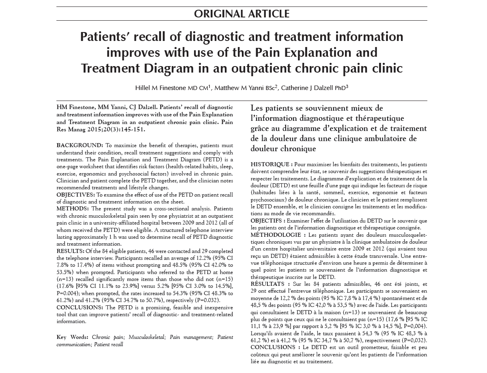

Le patient et le médecin remplissent ce formulaire. Le patient se demande
"Quels sont mes facteurs de risque de douleur? et les identifie ensuite à l'aide de ce formulaire."
Le médecin pourra alors apporter le diagnostic et le traitement approprié.

Les patients remplissent ce formulaire avant la visite et l'envoient par courrier électronique à leur médecin.

Aide supplémentaire sur la façon d'utiliser efficacement le diagnostic des facteurs de risque de douleur pour les médecins.
Le patient et le médecin remplissent ce formulaire. Le patient se demande
"quels sont mes facteurs de risque de douleur? et les identifie ensuite à l'aide de ce formulaire."
Le médecin pourra alors apporter le diagnostic et le traitement approprié.
Les patients remplissent ce formulaire avant la visite et l'envoient par courrier électronique à leur médecin.